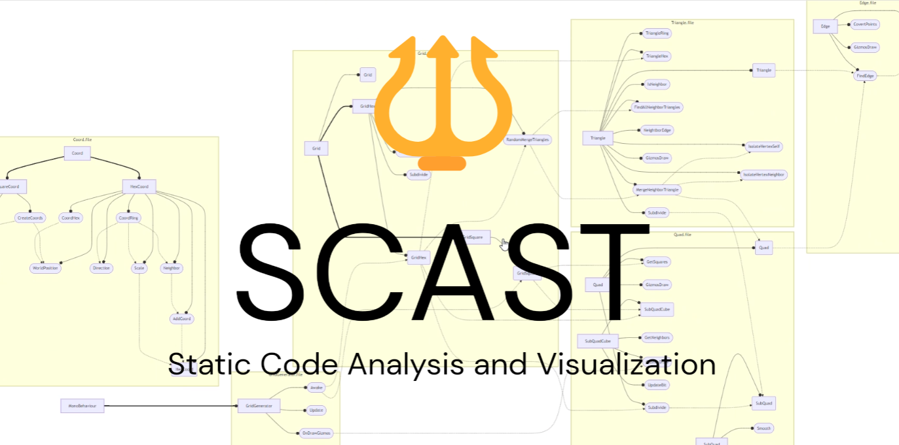

SCAST
一个用于分析静态类型面向对象程序的工具，自动生成UML图，AST树等。
2024/9/17 by DKZ

最近看了一些游戏源码，遇到一些比较复杂的工程有一个需求是整理项目的结构，分析代码调用的逻辑，然后用图的方式呈现出来。之前尝试过用AI直接生成mermaid代码，有两个问题一个是准确率不太高，另一个是上下文有限很难把一个大项目直接全部塞进去，之前的需求是补一些文档也就要求不高。但要是真的想学习研究的时候节省时间，对准确的要求还是要高的，于是做了这样一个工具，原理是解析代码生成AST树然后做静态分析最后调用mermaid和D3生成图表。
目前是自己写了一个简单的语法分析器生成AST树，可以兼容csharp、typescript、javascript或是类c语言风格语法的程序。能够兼容这么多语言其实是放宽了很多限制，灵感来源是我发现typescript解析器居然可以直接解析csharp代码，我以前只知道typescript的解析器不是很严格可以跳过类型声明和某些关键字，因为目标语言是转换为javascript，用途也主要是前端项目，设计之初可能也为了拉拢一些js背景的程序员。我也知道typescript和csharp很像，因为它们同宗同源都是微软那帮人搞出来的，但typescript能解析csharp语法的代码还是震惊了我。仔细分析AST还是有很多解析不到位的情况，研究了一下源码与很多解析器不同的是typescript在很多情况下不是抛出unexpected token语法错误而是将这部分直接解析成了js语法树。 于是我尝试自己写了一个简单的语法解析器，也类似typescript解析器的策略以兼容更多语言，把能解析的部分做静态分析，然后基于静态分析的结果调用mermaid和D3生成UML图和AST树图。
当然也有代价我自己写的这个语法分析器还是有点简单，只是是半个语法解析器只做了大部分statement和少部分expression的解析，声明部分对于方法参数的解析不是很完整，表达式只做了方法调用和new的解析，导致UML图参数的部分现在还是缺失的，一些我想要关联的表达式也没法关联上。评估了一下，要写出一个兼容很多语言还能正确解析出所有语义的解析器在架构上还是难度大了点。另外还有一个原因就是我这个静态分析本身只对静态类型语言有效，对动态类型语言就无能为力了。然后UML也只能表现面向对象这一种编程范式的逻辑，像对一些函数式过程式还有用框架组织的代码需要找到其他的图表示。可能是类似流程图，但其实现在这个流程图还是基于类的，原因是处理大的项目时颗粒度很难把控，不能很有效的将这些方法分组展示容易乱成一团。目前只能做到一个展平的方法调用关系，没想到好的方法展示嵌套的或者链式的关系。所以兼容不使用OOP范式和语言动态类型语言意义也不是很大。
打算是先做一个改现成typescript解析器的能够解析typescript代码最好还能兼容csharp，使用完整AST树进行分析的版本。因为在展示方面还没太想好，分组可能要一些聚类算法或者AI来参与。总之如果要做的话应该是个不小的工程，如果有什么建议的话欢迎评论或者私信告诉我，如果你对这个工具有兴趣也可以关注下后续的发展。
附上一个工具试用地址，目前是不完整初级阶段后续应该会补全。
已开源在github